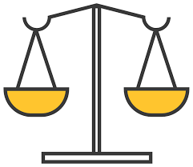

MISIÓN:
Nuestra empresa, tiene como misión el desarrollar sistemas en el área computacional, que sirvan de apoyo y satisfagan las necesidades de nuestra empresa apegándose a los planes estratégicos, así como, apoyar el desarrollo académico, de investigación y administrativo.
VISIÓN:
Ser un centro de cómputo consolidado en su infraestructura física, sus funciones básicas de servicios de cómputo y desarrollo de sistemas, con laboratorios certificados, software actualizado y una amplia y mejorada red institucional, sistemas de información y soporte técnico calificado, para constituirse como una herramienta esencial y de punta que represente una ventaja de aprendizaje y desarrollo para los usuarios. Así como , desarrollar una confiable capacidad en el manejo de programas computacionales, propiciando la innovación y el fomento de la cultura informática, logrando fortalecer el quehacer general de la Institución. Posicionando al Centro de Cómputo como un departamento con excelencia y capacidad para el desarrollo propio e Institucional.

VALORES:
Codeman es una empresa consultora de tecnología enfocada a crear soluciones a la medida para cualquier sector de la industria aprovechando el uso de las nuevas tecnologías, identificamos y nos adaptamos a las necesidades de nuestros clientes mediante la innovación y valores agregados a cada una de nuestras soluciones.
Sabemos que para ser parte de ti tenemos que trabajar hombro a hombro hasta ser uno solo, nuestros clientes son parte fundamental de cada solución que creamos.
-Responsabilidad: En Codeman estamos comprometidos a brindar un servicio de calidad y ser correctos en todo momento.
-Integridad y ética: Estamos comprometidos a mantener cualquier información de forma privada.

-Respeto: Es algo fundamental para tener una sana y buena relación con los clientes y mismos empleados, es por ello que estamos comprometidos a darles un servicio de calidad.
-Actitud de servicio: Para nosotros es importante tener una buena actitud, pues esto influye mucho en el trato al cliente y es por ello que estamos decididos a brindar el mejor servicio y trato a cualquier cliente.
-Trabajo en equipo: La clave para un buen servicio empieza desde nosotros, es por esto que estamos comprometidos en conjunto con el personal a ser responsables.

-Mejora continua: Para brindar el mejor servicio el equipo está comprometido a tener una mejora continua y así siempre estar al tanto de las nuevas necesidades.